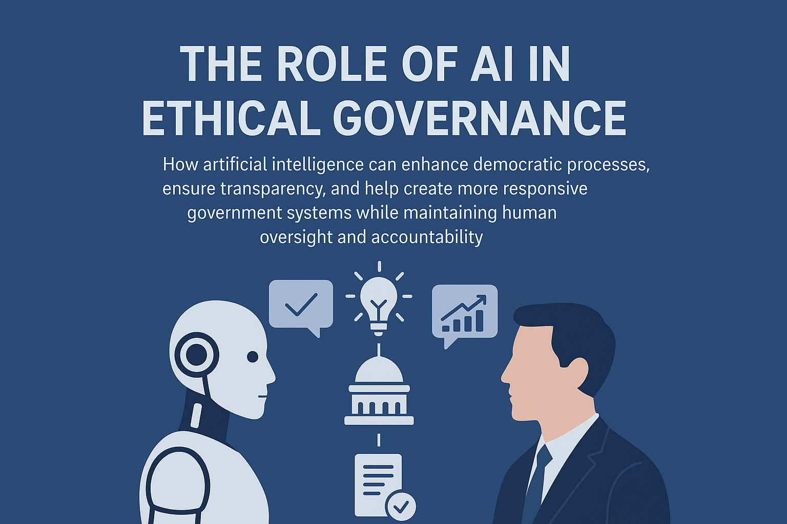

Education & Knowledge
Empowering learners with digital literacy, coding, AI skills, and holistic education programs worldwide.
500+ Students
15+ Programs
Explore Projects →
🌐 Civilization 3.0 | Building the Sustainable Future Through Science, Technology & Ethics
Visionary Leader | Civilization 3.0 Architect
Civilization 3.0 represents the next evolutionary phase of human progress — where consciousness, technology, and sustainability converge to form a new model of global civilization. It transcends political, cultural, and religious divisions to build a scientifically grounded, ethically intelligent, and socially equitable world.
To build Civilization 3.0 — a scientifically enlightened, ethically balanced, and technologically advanced society where knowledge, artificial intelligence, and innovation unite humanity for sustainable progress, universal peace, and shared prosperity. We envision a world where every individual has access to quality education, healthcare, and opportunities to contribute meaningfully to society's advancement.
Promote scientific thinking, digital literacy, and critical reasoning skills for all age groups through accessible online and offline platforms.
Integrate artificial intelligence and ethics in education, governance, economy, and healthcare while ensuring transparency and accountability.
Empower youth to innovate, lead sustainable change, and become active participants in shaping Civilization 3.0's future.
Bridge cutting-edge technology with fundamental human values, environmental balance, and social responsibility.
Developing open-source, ethical AI frameworks specifically designed for education enhancement, transparent governance systems, and comprehensive social welfare programs. Our goal is to ensure AI serves humanity's best interests.
Learn More →Conducting interdisciplinary research programs that combine cutting-edge science, emerging technology, and timeless human values to guide Civilization 3.0's evolution through practical experimentation and innovation.
Learn More →Building a worldwide community connecting young innovators, thinkers, and changemakers to collaborate on transformative Civilization 3.0 projects that address climate change, inequality, and technological ethics.
Learn More →Connecting Energy, Life, Governance, and Identity
Explore active initiatives driving sustainable development, digital transformation, and human evolution.
Empowering learners with digital literacy, coding, AI skills, and holistic education programs worldwide.

Participatory, transparent decision-making using DAO and blockchain-enabled frameworks for communities.

Community farms, circular investment models, and resilient local economic systems for sustainable growth.

Holistic wellbeing programs for youth and communities: yoga, meditation, and fitness innovations.

Sustainable and organic farming, seasonal crops, cooperative models, and agro-tech innovations.

Eco-restoration, biodiversity programs, climate action, and green urban design initiatives.
Join our global network of changemakers and innovators

A theoretical framework describing the transformation of human society through science and reason.
Read More
An advanced governance system combining AI ethics, logic, and public participation.
Read More
A futuristic model ensuring ethical AGI through decentralized verification and logic layers.
Read More
An applied methodology to implement innovative solutions in social and technological systems.
Read MoreExplore visionary thoughts, Civilization 3.0 research, and AI-driven philosophies for a better future.
 Philosophy
October 15, 2025
Philosophy
Philosophy
October 15, 2025
Philosophy
Humanity is entering a new era where technology, AI, and ethical leadership converge to shape a sustainable and equitable future for all.

AI & EthicsHow artificial intelligence can enhance democratic processes, ensure transparency, and create more responsive government systems.
 AI & Society
AI & Society
How AI can personalize learning, enhance creativity, and prepare humanity for Civilization 3.0's knowledge-driven society.
 Sustainability
Sustainability
Exploring innovations that balance progress with planetary responsibility — the core of Civilization 3.0.
 Ethics
Ethics
Examining the moral frameworks necessary to guide humanity through rapid technological advancement and social transformation.
 Society
Society
How digital transformation is reshaping social structures, community bonds, and collective decision-making processes.
 Society
Society
How modern employment systems subtly condition human behaviour, suppress creativity, and limit freedom — a research-based analysis connecting psychology, economy, and technology.
Thoughts, stories, and insights for everyone — simplifying big ideas for the modern audience.
Artificial intelligence is transforming how we learn — from personalized tutoring to adaptive assessments and creative learning experiences...
Read More
In a world full of noise, the beauty of simplicity offers peace, clarity, and purpose. Discover how living simply can create true happiness...
Read More
As artificial intelligence reshapes governance and public policy, democracy must evolve to remain fair, transparent, and truly human-centric...
Read More
A brief insight into the Civilization 3.0 vision for a new global paradigm.

Discover how innovation drives Civilization 3.0 research and development.

Learn how AI and emerging tech are shaping the future of Civilization 3.0.

Explore how emerging technologies intersect with ethical and societal development in Civilization 3.0.

Visionary Leader | Philosopher | Teacher | Civilization 3.0
Shivanta Ronghang is a pioneering thinker and technology visionary dedicated to shaping the future of human civilization through the integration of advanced technology, scientific thinking, and ethical frameworks. With a background in education, sociology, computer science, philosophy, and social innovation, Shivanta has dedicated their career to exploring how humanity can navigate the challenges of the 21st century.
As the founder of the ONSNC Civilization 3.0 movement, ONSNC Foundation, Shivanta works with social worker, researchers, technologists, policymakers, and youth leaders worldwide to develop practical frameworks for sustainable development, ethical AI deployment, and democratic governance systems. Their work has been featured in international conferences and publications focused on future studies and technology ethics.
📍 Virtual Event | Online Platform
Join young leaders from around the world to discuss innovative solutions for climate change, technology ethics, and sustainable development.
Register Now📍 Hybrid Event | Guwahati, India
Interactive workshops on building ethical AI systems, understanding algorithmic bias, and implementing responsible AI frameworks.
Register NowHave questions about Civilization 3.0? Want to collaborate on a project? Interested in joining our global network? We'd love to hear from you!